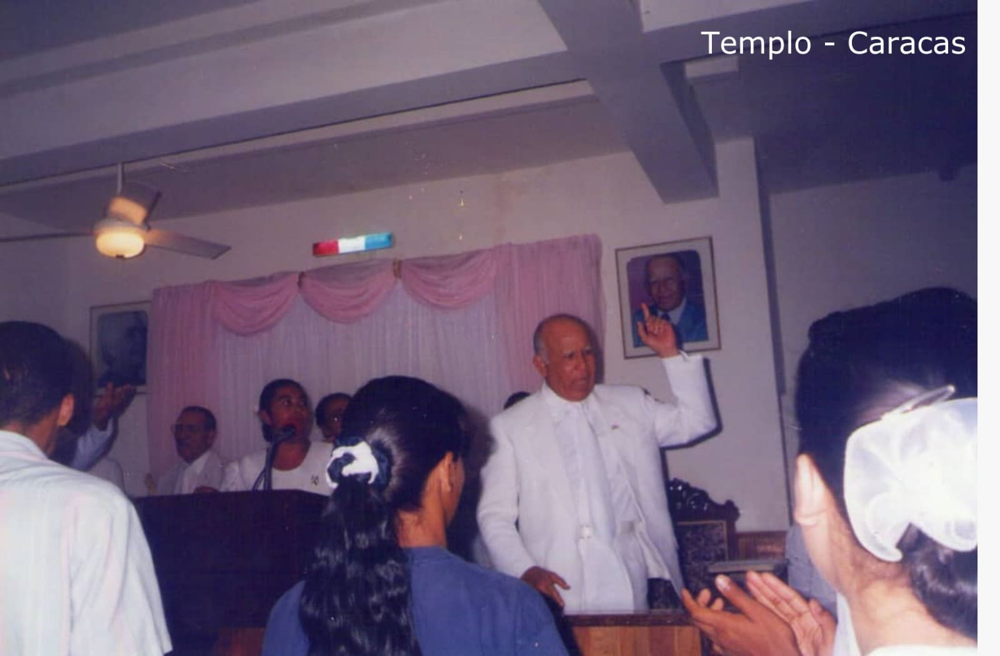

A Obra de Mita chegou à Venezuela em 1982. Na década de 1950, o Espírito Santo de Deus, pela boca de Juanita García Peraza, disse a Aarón: “Vamos a Caracas”. Essa profecia se cumpriu em 1981, quando a venezuelana Indalecia de Rivero viajou para Porto Rico. Durante sua estada na ilha, ele pega um táxi e avisa ao motorista que quer ir a um restaurante onde possa comer saudável e gostoso. O condutor era José Reyes, membro da Congregação, que procedeu à sua condução ao Restaurante Duarte, situado nas imediações do templo da Mita.
Enquanto almoçava, Indalecia se afogou em decorrência de um câncer no esôfago. Os irmãos que estavam ali informaram Aaron —que estava perto do restaurante— sobre a situação, e ele foi até o local e orou a ele. Indalecia conseguiu superar o afogamento e também —confirmou-se depois— ficou curada desse câncer. Aarón aproveitou a situação para falar com ela sobre a Obra de Mita e a convidou para um serviço religioso. Ele conta que na Venezuela, na região de Catia La Mar, morava um casal dominicano, Calixta Cruceta e Manuel Rosario, com quem ele poderia entrar em contato para saber mais sobre a Congregação. Ela concorda com o convite de Aaron, vai ao culto naquela noite e se converte. Aarón enviou com ela uma carta endereçada aos irmãos Calixta e Manuel onde lhes perguntava se era possível receber em sua casa os obreiros (pastores) de Porto Rico, a fim de começar a pregar naquelas terras. Calixta e seu marido concordam com esse lindo pedido.
Meses depois, a senhora Carmen Gómez, que morava na cidade de Valência, viaja para Porto Rico com Cecilia Mendoza e Otilia. Eles pegam um táxi e perguntam ao motorista sobre recomendações de lugares turísticos e igrejas que poderiam visitar. O motorista, que era membro da Congregação Mita, os convida para um serviço religioso. Naquela noite eles também tiveram sua conversão. Cecilia Mendoza ficou tão maravilhada que voltou a Porto Rico e disse a Aarón que gostaria que a Igreja chegasse à cidade de Valencia, Venezuela.
Em 6 de março de 1982, Aarón enviou os primeiros trabalhadores (Amador Laureano, Ismael Soto e Ángel “Noro” Narváez) para terras venezuelanas. Eles estabelecem congregações em Catia La Mar e em Caracas.
Em agosto de 1982, Aarón e um grupo de irmãos de Porto Rico chegaram à Venezuela pela primeira vez. Eles celebram três serviços religiosos: na Plaza Bolívar de Catia La Mar, em uma sala de reuniões do edifício nº 56 em Caracas e na cidade de Valencia, nos setores Los Guayos e Isabelica. Muitos necessitados aceitaram a mensagem do Espírito Santo de Deus pela boca de Aarón.

Em 30 de março de 1989, Aarón inaugurou o templo de Caracas. Em 6 de fevereiro de 1990, enviou os primeiros instrumentos musicais a Caracas para formar uma banda; da mesma forma, ele envia Sarita Calderón para dar aulas de música.
São centenas de venezuelanos que aceitaram a Obra de Mita e testemunham que receberam o Senhor.
No final de 1982, Consuelo Mora Villamizar estava muito doente com câncer no útero. Uma prima chamada Norma García conta a ela que existe uma igreja que chegou de Porto Rico, onde ocorreram grandes milagres e curas. Consuelo, apesar de ter muitas dúvidas, conseguiu ver uma luz de esperança e decidiu visitar aquela igreja. O trabalhador Ángel “Noro” Narváez explica-lhe a mensagem da Obra de Mita, convida-o a ficar no serviço desta quinta-feira e exorta-o a estar presente no sábado para falar com Aarón ao telefone. Naquele sábado, Consuelo e seus dois filhos, Omar e Julio Villamizar, tiveram a oportunidade de falar com Aarón por telefone. Virando-se para Consuelo, Aaron disse a ela: "Você vai ser curada desse câncer" e começou a orar para ela. A palavra do profeta de Deus se cumpriu e tanto Consuelo quanto muitos membros de sua família ingressaram na Congregação.